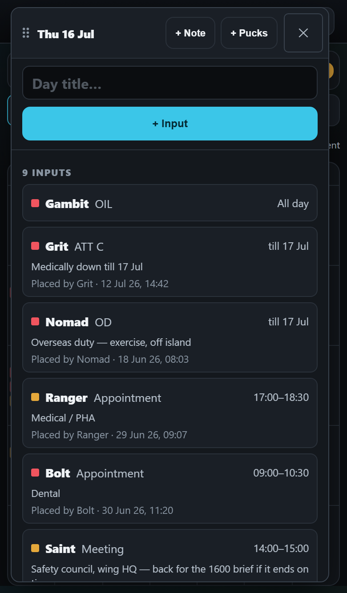
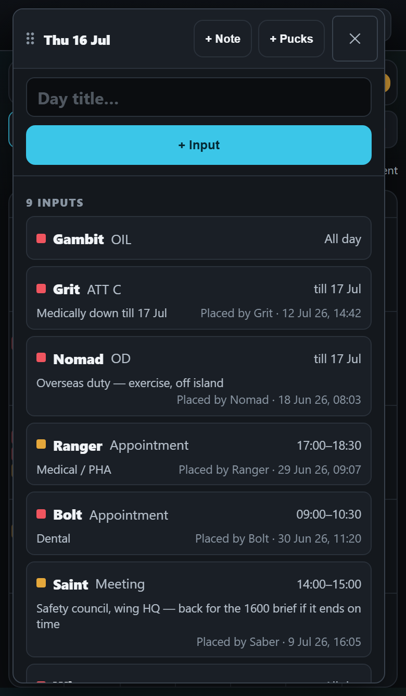
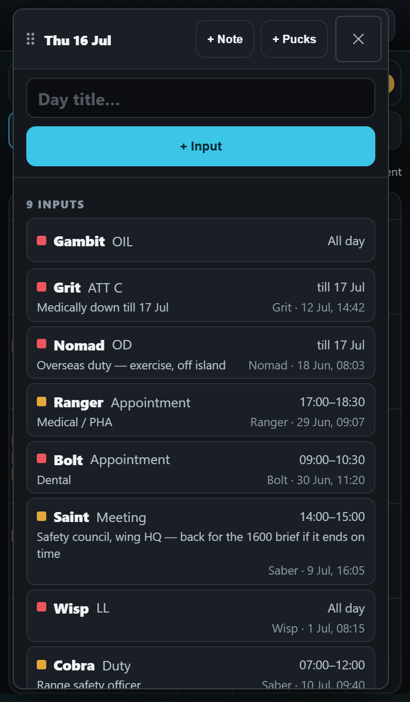

<title>Shorter Day Inputs</title>
<link rel="stylesheet" href="https://fonts.googleapis.com/css2?family=Barlow:wght@400;500;600&family=Barlow+Semi+Condensed:wght@600;700&display=swap">
<style>
  /* One column of phone pictures, each with its height in the caption; the open questions sit at the foot as cards.
     A single dark look, the app's own: its panels, its cyan, its amber. */
  :root {
    color-scheme: dark;
    --bg: #0b0d11; --panel: #14181e; --edge: #2a313b; --ink: #e9edf2; --ink-2: #a8b1bd; --ink-3: #7a8491;
    --accent: #3bc6e8; --mark: #ffd60a; --done: #57c98a;
    --display: "Barlow Semi Condensed", "Arial Narrow", Arial, sans-serif;
    --body: Barlow, "Segoe UI", Arial, sans-serif;
  }
  body { background: var(--bg); color: var(--ink); font-family: var(--body); font-size: 16px; line-height: 1.45; }
  main { max-width: 760px; margin: 0 auto; padding-inline: 16px; padding-block: 20px 48px; display: flex; flex-direction: column; gap: 28px; }
  h1 { font-family: var(--display); font-weight: 700; font-size: 30px; line-height: 1.1; margin: 0; text-wrap: balance; }
  h2 { font-family: var(--display); font-weight: 700; font-size: 21px; margin: 0; text-wrap: balance; }
  p { margin: 0; color: var(--ink-2); max-width: 62ch; }
  .lede { color: var(--ink); }
  .tag { font-family: var(--display); font-weight: 700; letter-spacing: .08em; text-transform: uppercase; font-size: 12px; color: var(--ink-3); }
  .tag.pick { color: var(--mark); }
  .pair { display: grid; grid-template-columns: repeat(auto-fit, minmax(260px, 1fr)); gap: 16px; align-items: start; }
  figure { margin: 0; display: flex; flex-direction: column; gap: 8px; min-width: 0; }
  figure button { all: unset; cursor: zoom-in; display: block; border: 1px solid var(--edge); border-radius: 12px; overflow: hidden; background: var(--panel); }
  figure button:focus-visible { outline: 2px solid var(--accent); outline-offset: 2px; }
  figure img { display: block; width: 100%; height: auto; }
  figcaption { display: flex; flex-direction: column; gap: 2px; }
  figcaption b { font-weight: 600; color: var(--ink); }
  figcaption span { color: var(--ink-2); font-size: 15px; }
  .size { font-variant-numeric: tabular-nums; color: var(--ink); font-weight: 600; }
  section { display: flex; flex-direction: column; gap: 12px; }
  .q { border: 1px solid var(--edge); border-radius: 12px; background: var(--panel); padding: 14px 16px; display: flex; flex-direction: column; gap: 6px; }
  .q b { color: var(--ink); font-weight: 600; }
  .q .rec { color: var(--accent); font-weight: 600; }
  .q.done b { color: var(--ink-2); }
  .q.done .rec { color: var(--done); }
  .note { font-size: 14px; color: var(--ink-3); }
  dialog { border: 0; padding: 0; background: #000; max-width: 100vw; max-height: 100dvh; width: 100vw; height: 100dvh; overflow: auto; }
  dialog::backdrop { background: #000; }
  dialog img { display: block; width: 780px; max-width: none; margin: 0 auto; cursor: zoom-out; }
  dialog button { position: fixed; top: calc(10px + env(safe-area-inset-top, 0px)); right: 12px; font: 600 15px var(--body); color: var(--ink); background: var(--panel); border: 1px solid var(--edge); border-radius: 10px; padding: 8px 14px; }
</style>
<main>
  <header style="display:flex;flex-direction:column;gap:8px">
    <span class="tag">A drawing · nothing here is built</span>
    <h1>Inputs that take less height in an opened day</h1>
    <p class="lede">Your idea, drawn on the real day window on a small phone, with a busy day of nine inputs. Count how many inputs you can see whole before scrolling. Tap a picture to see it full size.</p>
  </header>

  <section>
    <h2>Today, for comparison</h2>
    <div class="pair">
      <figure>
        <button type="button" data-zoom="img/day-inputs-compact/a-today.png" aria-label="Open picture: Three rows an input"></button>
        <figcaption><span class="tag">Today</span><b>Three rows an input</b><span><span class="size">5</span> of the 9 inputs show whole. An input with a remark is <span class="size">79</span> points tall.</span></figcaption>
      </figure>
    </div>
  </section>

  <section>
    <h2>A · Your idea</h2>
    <div class="pair">
      <figure>
        <button type="button" data-zoom="img/day-inputs-compact/b-his-idea.png" aria-label="Open picture: “Placed by” beside a short remark"></button>
        <figcaption><span class="tag pick">A · Your idea</span><b>“Placed by” beside a short remark</b><span><span class="size">6</span> of 9 show whole. A short remark: <span class="size">61</span> points, two rows. Look at Nomad: its remark is only a little long, and “Placed by” already has to drop to a third row. Saint shows a truly long remark.</span></figcaption>
      </figure>
    </div>
  </section>

  <section>
    <h2>B · Your idea, with shorter small print</h2>
    <div class="pair">
      <figure>
        <button type="button" data-zoom="img/day-inputs-compact/c-shorter-words.png" aria-label="Open picture: “Grit · 12 Jul, 14:42” instead of “Placed by Grit · 12 Jul 26, 14:42”"></button>
        <figcaption><span class="tag">B · My suggestion on top of yours</span><b>“Grit · 12 Jul, 14:42” instead of “Placed by Grit · 12 Jul 26, 14:42”</b><span><span class="size">7</span> of 9 show whole. A short remark: <span class="size">51</span> points. Dropping the words “Placed by” and the year leaves room for a longer remark on the same row — Nomad now fits in two rows. A little less padding in each card too.</span></figcaption>
      </figure>
    </div>
    <p class="note">In both, an input with no remark (Wisp) keeps its small print on the second row, at the right. Gambit has none because it is demo data from before the app recorded who placed an input.</p>
  </section>

  <section>
    <h2>What I need from you</h2>
    <div class="q"><b>1. A or B?</b><span><span class="rec">I recommend B.</span> It shows two more inputs than today, and the name and date still say who placed it and when. If you want the words “Placed by” kept, choose A.</span></div>
    <div class="q"><b>2. The same on the SANS day?</b><span><span class="rec">I recommend yes.</span> Its commitments are laid out the same way, so the two days would keep reading as one.</span></div>
    <div class="q"><b>3. When?</b><span><span class="rec">I recommend after “merge live”,</span> together with the note that carries its own pucks — both change this same window.</span></div>
  </section>
</main>
<dialog id="zoom" aria-label="Picture, full size"><button type="button" id="zoomClose">Close</button></dialog>
<script>
  const dlg = document.getElementById('zoom'), big = document.getElementById('zoomImg')
  document.querySelectorAll('[data-zoom]').forEach(b => b.addEventListener('click', () => {
    big.src = b.dataset.zoom; big.alt = b.querySelector('img').alt
    if (dlg.showModal) dlg.showModal(); else dlg.setAttribute('open', '')
  }))
  const shut = () => { if (dlg.close) dlg.close(); else dlg.removeAttribute('open') }
  document.getElementById('zoomClose').addEventListener('click', shut)
  big.addEventListener('click', shut)
</script>
